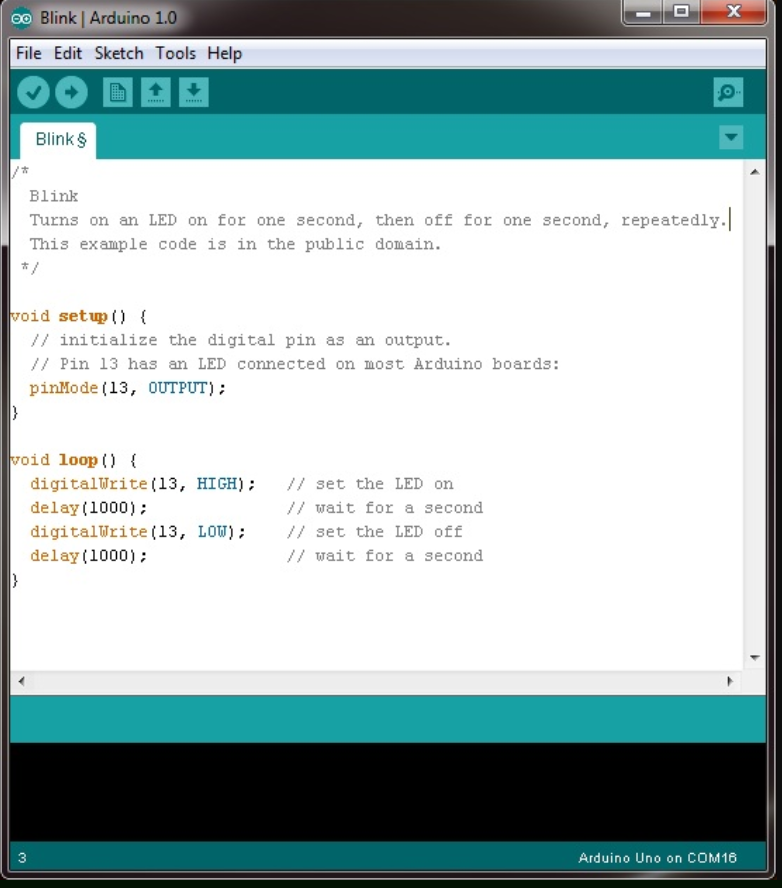

Arduino | Electronics
Arduino
Arduino is microcontroller platform that is easy to use for electronics projects. It allows you to connect electronics through its pins so you can control things. The Arduino has a microcontroller the has a processor, kilobyte or two of RAM, erasable programmable read-only memory (EPROM). The input and output pins link the microcontroller to the rest of the electronics. Inputs can read both digital (is the switch on or off) and analog (what is the voltage at a pin?). Outputs can also be analog or digital. The Atmel microcontroller on an Arduino board is the 28-pin chip fitted into the socket in the center of the board.
Arduino
Arduino Experimenter's Kit Files
Source Files for Arduino Experimenter's Kit
Experimenter's Guide for Arduino



The Sparkfun Inventors Kit
You will experiment with the Sparkfun Inventors Kit to learn about Arduino, physical computing and controlling microcontrollers. This will help you learn to build intelligence into your projects. These are low cost electronics that leverages the small integrated circuits called microcontrollers, which are simple computer systems on a very small chip. The Sparkfun Inventors Kit is a the perfect introduction to basic circuits, lights, sound, motion, display and robotics using the Arduion IDE.
Circuito.io
Circuito.io is an online circuit creator and Arduino code generation tool. Play around with in and see if you find it helpful.
Circuito.ioAssignments
1. Document and complete at least 3 projects from the Arduino guide. Take a picture of each project when completed and add to your page.
2.Write your own code on one project from Arduino. This can be as simple as changing some of the variables in the code, but make sure you documented what you changed and how it differs in operation from the original project.
3. Complete at least two of the first three projects in the Inventors Kit. Choose either Light, Sound or Motion. Complete the two projects on Display and Robot. You should try to complete all 5 projects. A project is considered complete when you complete all the Circuits within the Project.
4. Document each project you complete with a picture or short video of the project in action.
SparkFUn Inventors Kit, Version 4.0 Book
Online Inventors Kit Experiment Guide
Code for Inventors Kit, Version 4
Back to index